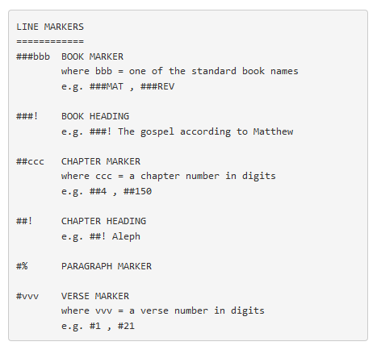
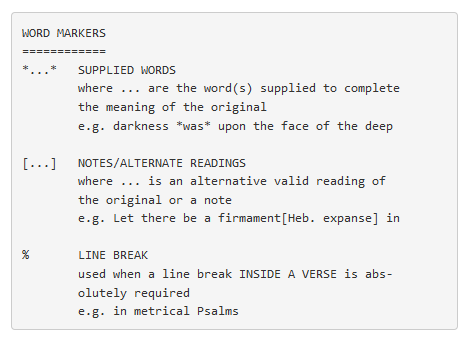
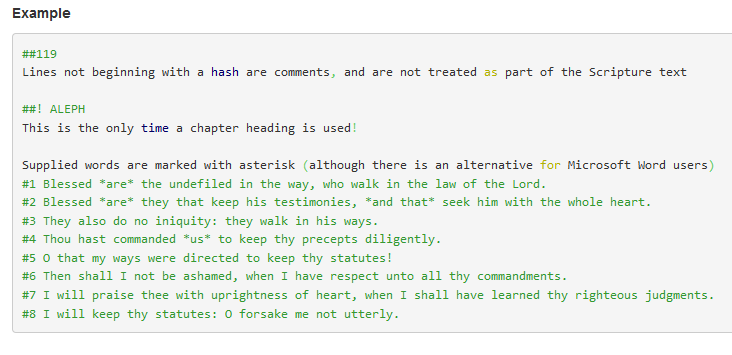
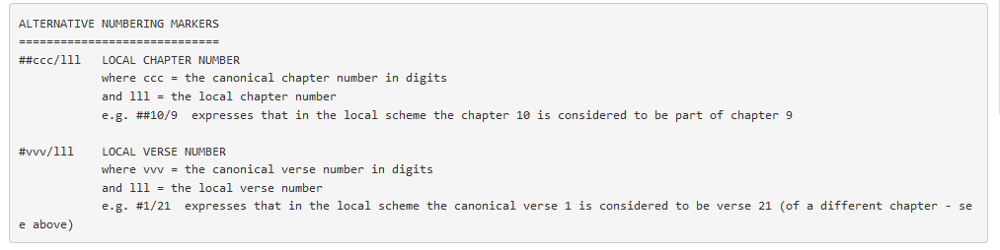
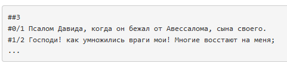

These can be Microsoft Word docx files, or UTF8 text files.
Files names must contain the English standard book abbreviation in capitals (see below for the abbreviations) somewhere in their name. If the book abbreviation is at the start of the file name, then there must be at least one space following the abbreviation IF any other content is included in the filename.
If the book abbreviation is not at the beginning of the filename, then there must be a space immediately before it, and a space immediately after it IF there is any other content following. Please note that the .docx and .txt is the type of file and does not need to be written as part of the file name.
VALID
MAT.docx
MAT 20 Jan 2016.docx
40
MAT.docx
40 MAT something.txt
INVALID
MAT,MRK.docx
MAT - JHN.docx
40_MAT.docx
40
MATsomething.txt
Old Testament
GEN -
Genesis
EXO - Exodus
LEV - Leviticus
NUM -
Numbers
DEU - Deuteronomy
JOS - Joshua
JDG -
Judges
RUT - Ruth
1SA - 1 Samuel
2SA - 2 Samuel
1KI
- 1 Kings
2KI - 2 Kings
1CH - 1 Chronicles
2CH - 2
Chronicles
EZR - Ezra
NEH - Nehemiah
EST - Esther
JOB
- Job
PSA - Psalms
PRO - Proverbs
ECC -
Ecclesiastes
SNG - Song of Songs
ISA - Isaiah
JER -
Jeremiah
LAM - Lamentations
EZK – Ezekiel
DAN -
Daniel
HOS - Hosea
JOL - Joel
AMO - Amos
OBA -
Obadiah
JON - Jonah
MIC - Micah
NAM - Nahum
HAB
- Habakkuk
ZEP - Zephaniah
HAG - Haggai
ZEC -
Zechariah
MAL - Malachi
New Testament
MAT -
Matthew
MRK - Mark
LUK - Luke
JHN - John
ACT -
Acts
ROM - Romans
1CO - 1 Corinthians
2CO - 2
Corinthians
GAL – Galatians
EPH - Ephesians
PHP -
Philippians
COL - Colossians
1TH - 1 Thessalonians
2TH
- 2 Thessalonians
1TI - 1 Timothy
2TI - 2 Timothy
TIT
- Titus
PHM – Philemon
HEB - Hebrews
JAS -
James
1PE - 1 Peter
2PE - 2 Peter
1JN - 1 John
2JN
- 2 John
3JN - 3 John
JUD - Jude
REV - Revelation
This is a format scheme devised by the Society and is the preferred method for marking up Scripture text. Each book, chapter, verse and paragraph (if applicable) must be format marked. Supplied words, and line breaks must also be format marked.


Notes:
i) The hash (#) mark should begin at the start of the line, and not be preceded by any spaces or other characters
ii) Only lines beginning with a hash (#) are treated as Scripture text (so other lines can be used for comments)
iii) There is no space between the # and book, chapter or verse name/number
iv) Chapter and verse numbers should not contain leading zeros (e.g. chapter 1 is expressed as ##1 not ##001)
v) Psalm titles are considered to be verse 0 and so should be entered as, e.g. #0 A psalm of David
vi) When using Microsoft Word, asterisks are not needed for supplied words if the italics feature has been applied.

PLEASE NOTE: ##! can now be used for all chapter headings, not just for Psalm 119 headings.
Where a translation does not follow the chapter and verse numbering of the Authorised Version (which we call the Canonical numbering), it will be necessary to add local numbering. This is done by appending the local number to the end of the chapter and/or verse numbers as follows:

This is most commonly used where a translation gives a verse number to a Psalm title (which in the AV has no verse number). So, for example, in the Russian translation Psalm 3 is marked like this:

We would like a separate Word file for the descriptions. Here is an example of what an English file for Genesis 1 and 2 would look like. (Colour highlighting added for explanations. They are not necessary for the submitted file.)
GEN_1:
"1
The creation of heaven and earth,
3 of the light, 6 of the firmament. 9 The earth separated from the
waters, and made fruitful. 14 The creation of the sun, moon, and
stars, 20 of fish and fowl, 24 of beasts and cattle, 26 of man in
the image of God; and his blessing. 29 The appointment of
food."
GEN_2:
"1 The first sabbath. 4 The manner of the creation. 8 The
planting of the garden of Eden. 10 The river, and its four heads. 15
Man is placed in Eden, and the tree of knowledge only forbidden. 18
The naming of the creatures. 21 The making of woman, and institution
of marriage."
Note the following:
GEN_1: - Name of the book code, underscore, book number, colon
"1 The creation of heaven and earth, - Opening quotation marks ["], verse number, description
" – closing quotation mark
GEN_2: - each chapter should start on a new line.
The first book of Matthew (in Hungarian) would like this:
MAT_1: "1 Jézus Krisztus nemzetségi táblázata. 17 Jézus Krisztus fogantatása, neve, születése."
Cross references must be formatted in a separate file. The general guidelines are:
Each verse should have its own line for a cross-reference using the canonical verse numbering.
Each set of references are inside square brackets, and begin with a number which indicates the word in the verse that the reference set applies to (eg. 1 – the first word in the verse, 2 – the second word in the verse… 20 – the twentieth word in the verse etc.)
If the references apply to the whole verse, then the initial number is a 0
References are defined using the canonical format with the possible addition of:
+ to link together separate verses in the same chapter
- to link to consecutive verses
Example of Genesis 1:1-3
Bookname_chapter number_verse number, colon, opening square bracket (wraps all the references in the chapter), second opening bracket (wraps all the refences for the particular word number), word number, cross-refences (book name_chapter number_verse numbers), comma, repeat for all refences for that word number, closing square bracket (for the number). If more words in the verse have cross references then add a comma, an opening square bracket, the references, then its closing square bracket. Once all the cross references are completed, end with the final square bracket.
Here are examples of Genesis 1:1-3.
GEN_1_1: [[4, PSA_33_6+9, PSA_136_5, JHN_1_1-3, COL_1_16+17, HEB_1_8-10, HEB_11_3]]
GEN_1_2: [[5, JER_4_23],[20, JOB_26_13]]
GEN_1_3: [[4, 2CO_4_6]]
Example for Matthew 1: (For the Hungarian Bible)
MAT_1_1: [[9, LUK_3_23-38]]
MAT_1_2: [[10, GEN_21_3+12, GEN_25_26+29+35, GEN_49_10]]
MAT_1_3: [[3, GEN_38_29+30],[11, RUT_4_18-22]]
MAT_1_6: [[2, RUT_4_18-22],[10, 2SA_12_24]]
MAT_1_7: [[3, 1CH_3_10-16]]
MAT_1_9: [[6, 2KI_15_7-38],[9, 2KI_16_20]]
MAT_1_10: [[3, 2KI_20_21],[6, 2KI_21_18+23+26]]